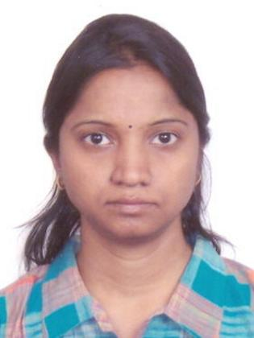

M.Sripriya

SUMMARY
- Solution Architect offering 23+ years of experience in accomplishing projects
- Expertise in Architecture, Feature design, development & testing across different domain
- Expertise in different roles such as System Architect, Release Engineer, Scrum Master, Feature Engineer, Customer interactions, Solution Architect in both Waterfall and Sprint model
- Extensive experience in analyzing project needs, define opportunities and implementing software solutions
- Innovation in non-functional requirements –scalability, reliability, performance, and supportability
- Technical leader with impressive communication skills, adaptable to new technologies, a flair for analytical troubleshooting, and the ability to lead and motivate high-performance teams
CORE COMPETENCIES
- Requirements’ analysis, Functional specifications, high & low level design development, testing and maintenance. Performance optimization, end to end system knowledge, clean, modular and maintainable coding
- Reducing complexity, optimize, and conceptualize software systems | Architecture re-engineering
- Review, analytical troubleshooting expertise | Automation framework development |FOA|Open-source software evaluation and selection | Leadership | Team building| Customer centric
TECHNICAL SKILLS
- Skill: C/C++, Java, JSON, shell script, PHP, Rest API, Waterfall, Agile, Debugging Memory leaks, Core analysis, Handling field issues
- Domain – Wireless (GSM, 3G1xRNC, 1xEVDO), Wireline, Storage
- Roles – Feature Engineer, Release Engineer, Feature architect, Solution architect, Scrum Master
- Tools: GDB, Perforce, ClearCase, Git, Wireshark, Spirent, Valgrind, ASAN
- Operating Systems: UNIX
AWARDS & RECOGNITION
- Recognition for driving the Unit test automation implementation end to end
- Best feature presentation to First Office Acceptance (FOA) Team
- Recognition for coming up with a relatively fast solution for Customer issues
- Best training coordinator for 3G 1X RNC transition
- Best active team member for 3G 1XRNC project
- Best Team member award in GSM Project
Professional Experience
- HCL Technologies, Bangalore
Aug 2014 – Till now
(via takeover of Alcatel Lucent Wireless division)
- Project #1(Client : Netapp)
- SME in debugging resolving c, c++ mem leaks, corruption, core dumps
- Solution architect for Server-side development (C, C++, JSON, Rest API, Templates, PHP), automation and System Testing
- Project consultation for simulating developer test automation environment from scratch, which was recognized, and further multiple projects were given.
- Involved in training and presentation of the solution approach.
- Involved in POC for performance-based enhancements and providing estimates.
- Project#2(Client : Brocade )
- SME for multicast. Involved in bridging the gap of the functional spec and Standards for Multicast
- Customer interaction to understand the requirement to come up with feature enhancements
- Project#3(Client : ALU )
- Transition of BTS call processing as SME
- Performance based POC to improve system efficiency
- Interaction with customer for innovative feature enhancements
- Alcatel- Lucent, Bangalore
Nov 2008 - Jul 2014
- Role as Release Engineer, Scrum Master, Feature Engineer in Development and Integration of various EVDO features such as CP Handoff, Network Load Balancing etc
- Worked on identifying performance improvements of different sub systems. Ensuring Data Call information are backed up to avoid call drops during system failure.
- Involved in providing Chalk talks with list of POC
- Support for Field installation, issues, readiness and Interaction with Customer
- Providing innovative ideas for black box testing.
- Providing testing strategies and involved in Reviews as Critical Reviewer for System Testing of RNC Call processing scenarios of EVDO and other CDMA systems
- Cisco systems, Bangalore
April 2007– Sept 2008
- Customer interaction for performance-based enhancements
- SME for HA. Providing inputs for performance tests, load tests and stress testing for Home-agent systems.
- Aricent, Bangalore
March 2003- March 2007
(via takeover of Lucent Technologies GSM division)
- As a Feature Engineer interaction with system architects, co-ordination with different subsystem development and test teams for delivering a quality product as well as meeting the project schedule.
- Managing the feature development team of call processing subsystem.
- Involved in different phases of the product cycle like capturing requirements, planning schedule for different releases, implementing and testing of the software for call processing subsystems.
- Providing high level chalk talks and technical support to the team.
- Design and implementation of Dormant handoff, Dormant records backup, push to talk feature, RNC Alternate Routing and other features in C ++.
- Key contributor and Onsite field support for US customers on CDMA 1X RNC product.
- Lucent technologies, Bangalore
May 2000- March 2003
- Design and Development of call processing software for base transceiver station
- Transition of BTS call Handling
- Design and Development of call processing software for base station controller frame
- Features implemented are such as Adaptive Multi rate, Overload protection, support of GSM/UMTS handover & various features in C language
- Expertise in Identifying memory leaks & code optimization
Education
B.E.: Bachelor of Engineering ~ Electronics and Communication | Madras University
Others